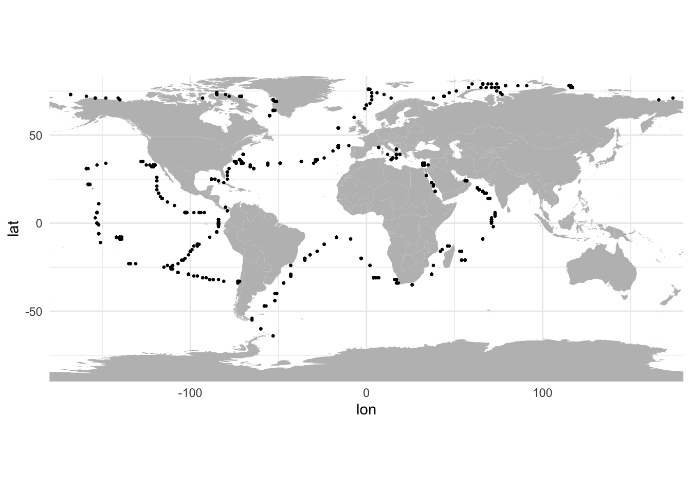
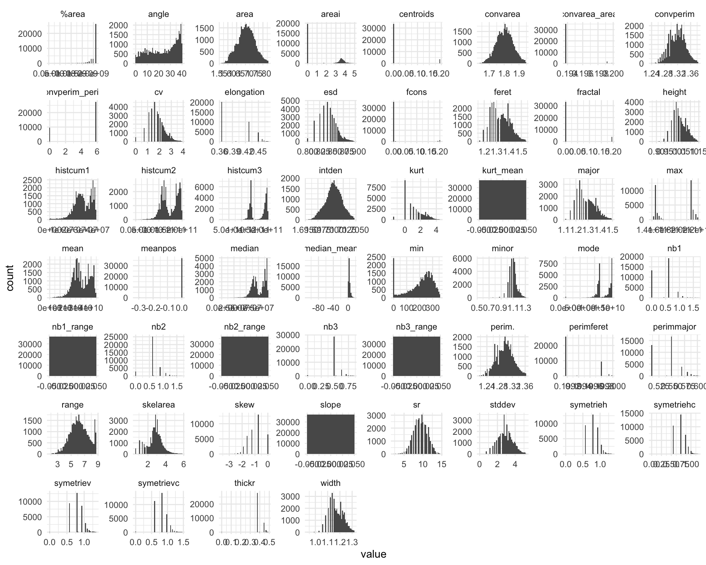
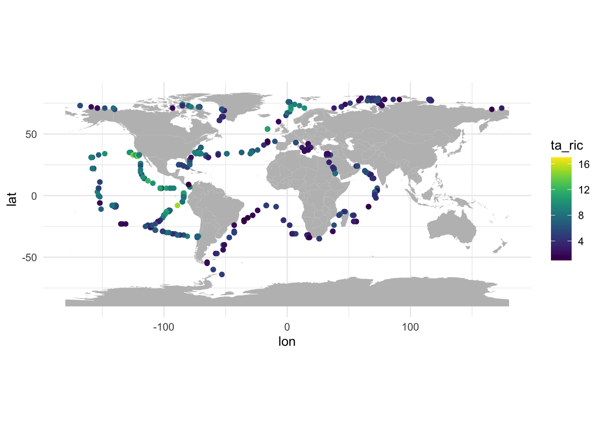
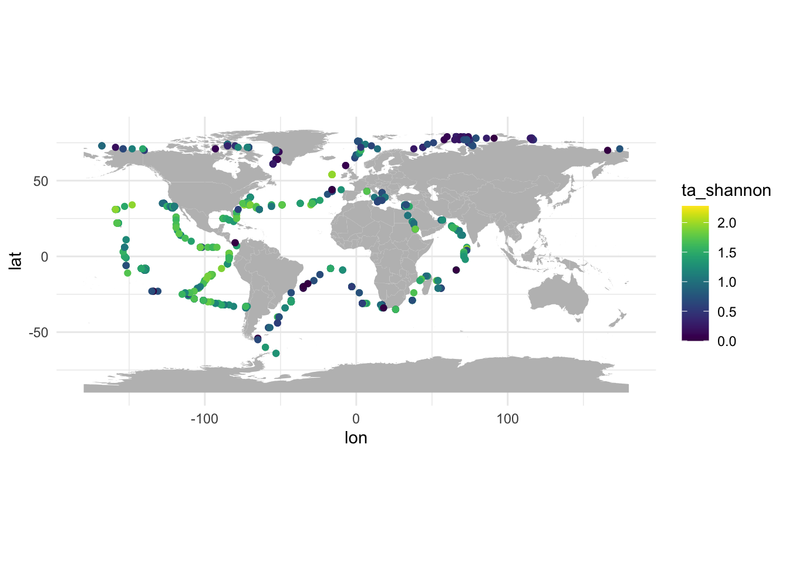
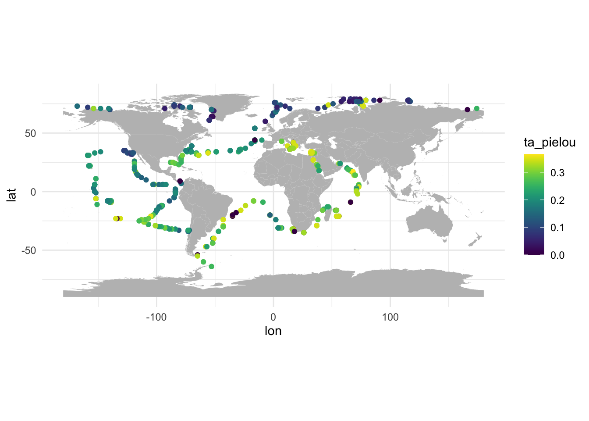
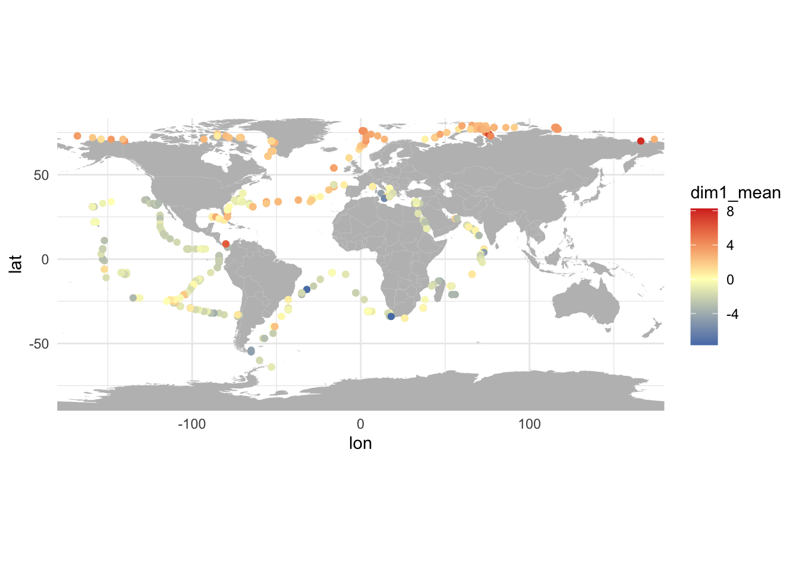
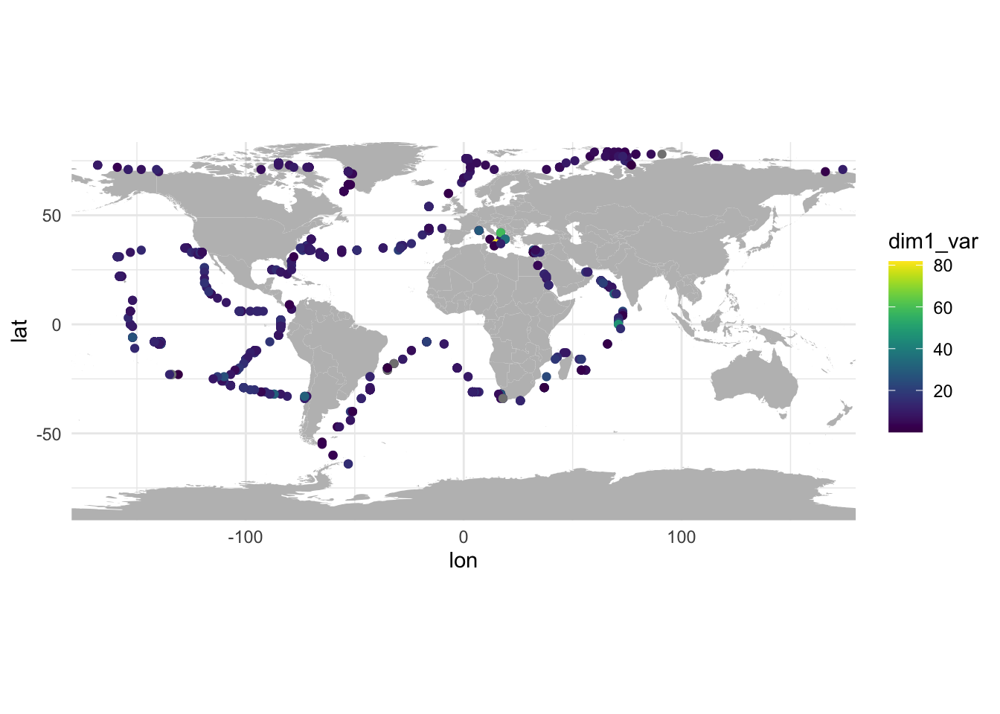

source("utils.R")Compute UVP diversity metrics
Read UVP data
load("data/02.tara_uvp.Rdata")Let’s quickly plot a map of the profiles we have extracted.
profiles %>%
ggplot() +
geom_polygon(data = world, aes(x = lon, y = lat, group = group), fill = "gray") +
geom_point(aes(x = lon, y = lat), size = 0.5) +
scale_x_continuous(expand = c(0, 0)) + scale_y_continuous(expand = c(0, 0)) +
coord_quickmap()
TODO: which depth to consider for UVP data?
Clean data
Taxa
There should be nothing to do here as we use the same taxonomy as the UVP5 dataset.
# List of taxa
taxa [1] "Acantharea" "Actinopterygii" "Annelida"
[4] "Appendicularia" "Cephalopoda" "Chaetognatha"
[7] "Cnidaria_others" "Collodaria" "Collodaria_colonial"
[10] "Copepoda" "Crustacea_others" "Ctenophora"
[13] "detritus" "Doliolida" "Eumalacostraca"
[16] "Foraminifera" "Gymnosomata" "Hydrozoa_others"
[19] "Mollusca_others" "Narcomedusae" "Ostracoda"
[22] "Phaeodaria" "Pyrosoma" "Salpida"
[25] "Siphonophorae" "Trichodesmium" Features
Some features have a unique value for all individuals and other are missing for many individuals. Let’s remove them.
TODO: check why circ. is binary.
# Select features
x <- o %>% select(area:areai)
# Remove variables with zero variance
feats <- x %>%
summarise_all(var, na.rm = TRUE) %>%
pivot_longer(cols = everything()) %>%
filter(value > 0) %>%
pull(name)
# Exclude some features with many missing values
feats <- feats[!str_detect(feats, "exc")]
# Exclude circ. as it is binary
# TODO check why
feats <- feats[feats != "circ."]
x <- x %>% select(all_of(feats))Plot features distributions.
x %>%
pivot_longer(cols = everything()) %>%
ggplot() +
geom_histogram(aes(x = value), bins = 50) +
facet_wrap(~name, scales = "free")Warning: Removed 24 rows containing non-finite values (`stat_bin()`).
For a PCA, features should be normaly-distributed. Let’s apply some transformation to get closer to normal distribution:
mask extreme values
normalize using the Yeo-Johnson transformation
replace missing values by the mean of each column
x_norm <- x %>%
# remove the most extreme high values
mutate_all(mask_extreme, percent=c(0,0.5)) %>%
# normalise using the Yeo-Johnson transformation
mutate_all(yeo_johnson) %>%
mutate_all(as.numeric)Warning: There were 125 warnings in `mutate()`.
The first warning was:
ℹ In argument: `slope = (function (x, lambda = NULL, eps = 0.001) ...`.
Caused by warning in `optimize()`:
! NA/Inf replaced by maximum positive value
ℹ Run `dplyr::last_dplyr_warnings()` to see the 124 remaining warnings.# Replace NA by average of each column
for (col in names(x_norm)) {
x_norm[[col]][is.na(x_norm[[col]])] <- mean(x_norm[[col]], na.rm=TRUE)
}Plot normalized features.
x_norm %>%
pivot_longer(cols = everything()) %>%
ggplot() +
geom_histogram(aes(x = value), bins = 50) +
facet_wrap(~name, scales = "free")
Taxonomic diversity
Compute taxonomic diversity indices:
Taxonomic richness
Shannon Diversity
Pielou Evenness
# Generate a contingency table as a matrix to feed to vegan
cont <- o %>%
count(sample_ids, taxon) %>%
pivot_wider(names_from = "taxon", values_from = "n", values_fill = 0) %>%
as.data.frame() %>%
column_to_rownames(var = "sample_ids") %>%
as.matrix()
# Compute diversity metrics
ta_div_prof <- tibble(
sample_ids = rownames(cont),
ta_ric = specnumber(cont),
ta_shannon = diversity(cont, index = "shannon"),
ta_pielou = ta_shannon/ta_ric
) %>%
left_join(profiles, by = join_by(sample_ids)) %>%
select(sample_ids, lon, lat, everything())
# Store results with table of profiles
profiles <- profiles %>% left_join(ta_div_prof, by = join_by(sample_ids, lon, lat))Plot taxonomic diversity metrics.
profiles %>%
ggplot() +
geom_polygon(data = world, aes(x = lon, y = lat, group = group), fill = "gray") +
geom_point(aes(x = lon, y = lat, colour = ta_ric)) +
scale_colour_viridis_c() +
coord_quickmap()
profiles %>%
ggplot() +
geom_polygon(data = world, aes(x = lon, y = lat, group = group), fill = "gray") +
geom_point(aes(x = lon, y = lat, colour = ta_shannon)) +
scale_colour_viridis_c() +
coord_quickmap()
profiles %>%
ggplot() +
geom_polygon(data = world, aes(x = lon, y = lat, group = group), fill = "gray") +
geom_point(aes(x = lon, y = lat, colour = ta_pielou)) +
scale_colour_viridis_c() +
coord_quickmap()
Trophic diversity
Morphological diversity
Morphospace
Build
Let’s feed the features to a PCA to build a morphospace.
# We need to use "scale.unit = TRUE" to center-scale all feature
m_space <- FactoMineR::PCA(x_norm, scale.unit = TRUE, graph=FALSE)Eigenvalues
Plot the eigenvalues.
eig <- m_space$eig %>%
as.data.frame() %>%
rownames_to_column(var = "comp") %>%
as_tibble() %>%
mutate(
comp = str_remove(comp, "comp "),
comp = as.numeric(comp),
comp = as.factor(comp)
) %>%
rename(var = `percentage of variance`, cum_var = `cumulative percentage of variance`)
eig %>%
ggplot() +
geom_col(aes(x = comp, y = eigenvalue)) +
theme_classic() +
scale_y_continuous(expand = c(0, 0)) +
labs(x = "PC", y = "Eigenvalue")
Most of the variance is captured by the first two axes (0.31 and 0.16 respectively).
Features and axis definition
Let’s now plot the first two axes.
plot(m_space, choix="var", axes = c(1, 2))
First axis: big objects in positive values, small objects in negative values.
Second axis: clear (i.e. transparent) objects in negative values, dark (i.e. opaque) objects in positive values.
Individuals
Let’s extract the coordinates of individuals in the morphospace.
## Get coordinates of individuals
inds <- m_space$ind$coord %>% as_tibble()
# Set nice names for columns
colnames(inds) <- str_c("dim", paste(c(1:ncol(inds))))
# And join with initial dataframe of objects
o <- o %>%
select(sample_ids:lat) %>%
bind_cols(inds)We can not plot the position of objects in the morphospace, coloured per profile.
## Plot invidivuals with profile as colour
o %>%
ggplot() +
geom_point(aes(x = dim1, y = dim2, colour = sample_ids), show.legend = FALSE, size = 0.5, alpha = 0.5) 
TODO: check the profile with high dim1 values.
o %>%
filter(dim1>10) %>%
ggplot() +
geom_point(aes(x = dim1, y = dim2, colour = sample_ids), size = 1, alpha = 0.5) 
The sample to inspect is 45148.
o %>% filter(sample_ids == 45148) %>% count(taxon) %>% arrange(desc(n))# A tibble: 10 × 2
taxon n
<chr> <int>
1 detritus 20
2 Copepoda 19
3 Phaeodaria 13
4 Chaetognatha 2
5 Eumalacostraca 2
6 Acantharea 1
7 Collodaria_colonial 1
8 Foraminifera 1
9 Hydrozoa_others 1
10 Mollusca_others 1Many Cnidaria tentacles, should we remove them? They can biase the construction of the morphospace.
Diversity
Morphospace features
We can collect the position of objects in the morphospace to summarise the morphological diversity of each profile.
# Compute mean and variance of dim1 and dim2 per profile
m_div_prof <- o %>%
group_by(sample_ids, lon, lat) %>%
summarise(across(dim1:dim2, list(mean = mean, var = var))) %>%
ungroup()`summarise()` has grouped output by 'sample_ids', 'lon'. You can override using
the `.groups` argument.# And store this with profiles data
profiles <- profiles %>% left_join(m_div_prof, by = join_by(sample_ids, lon, lat))And we can plot maps of mean dim1 and dim2 values for each profile.
profiles %>%
ggplot() +
geom_polygon(data = world, aes(x = lon, y = lat, group = group), fill = "gray") +
geom_point(aes(x = lon, y = lat, color = dim1_mean)) +
scale_x_continuous(expand = c(0, 0)) + scale_y_continuous(expand = c(0, 0)) +
scale_colour_gradient2(low = "#4575b4", mid = "#ffffbf", high = "#d73027") +
coord_quickmap()
profiles %>%
ggplot() +
geom_polygon(data = world, aes(x = lon, y = lat, group = group), fill = "gray") +
geom_point(aes(x = lon, y = lat, color = dim2_mean)) +
scale_x_continuous(expand = c(0, 0)) + scale_y_continuous(expand = c(0, 0)) +
scale_colour_gradient2(low = "#4575b4", mid = "#ffffbf", high = "#d73027") +
coord_quickmap()
We can also look at variance within profiles.
profiles %>%
ggplot() +
geom_polygon(data = world, aes(x = lon, y = lat, group = group), fill = "gray") +
geom_point(aes(x = lon, y = lat, color = dim1_var)) +
scale_x_continuous(expand = c(0, 0)) + scale_y_continuous(expand = c(0, 0)) +
scale_colour_viridis_c() +
coord_quickmap()
profiles %>%
ggplot() +
geom_polygon(data = world, aes(x = lon, y = lat, group = group), fill = "gray") +
geom_point(aes(x = lon, y = lat, color = dim2_var)) +
scale_x_continuous(expand = c(0, 0)) + scale_y_continuous(expand = c(0, 0)) +
scale_colour_viridis_c() +
coord_quickmap()
Metrics
Multivariate morphological diversity metrics have been defined in Beck et al. 2023 following the definition of multivariate functional diversity metrics in Villeger et al. 2008:
morphological richness
morphological evenness
morphological divergence
Computing these metrics require defining “morphs” (i.e. morphologically similar organisms) in the morphospace, i.e. using kmeans. These morphs are then used instead of species to compute morphological diversity metrics.
Save
save(profiles, file = "data/03.uvp_profiles.Rdata")